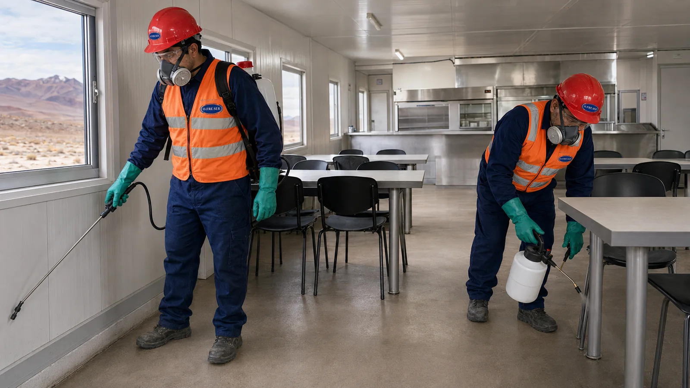

Control de plagas que acompaña tus procesos.
Prevención, monitoreo y control para industrias alimenticias, depósitos, logística, gastronomía y establecimientos que necesitan trazabilidad y documentación.
Preparados para entornos auditados.
El servicio se diseña pensando en Calidad, Operaciones, Facilities, Compras e Inocuidad.
Industria alimenticia
MIP, monitoreo, tendencias, documentación y acciones correctivas.
Depósitos y centros operativos
Control de riesgos vinculados con almacenamiento, tránsito y recepción de mercadería.
Comercios y gastronomía
Programas preventivos y documentación adaptada a la dinámica del establecimiento.

Inspeccionar antes de intervenir.
Los hallazgos se transforman en decisiones: condiciones estructurales, puntos de acceso, hábitos, actividad detectada y riesgos para el proceso.
Comedores, cocinas y áreas sensibles.
Los ambientes de preparación y consumo de alimentos requieren prevención, orden, monitoreo y respuestas técnicamente justificadas.

Información disponible cuando se necesita.
Planos, dispositivos, ODT, evidencias, hallazgos, tendencias e informes facilitan seguimiento y auditoría del programa.